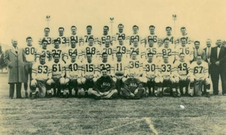
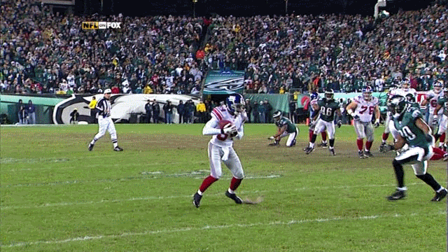
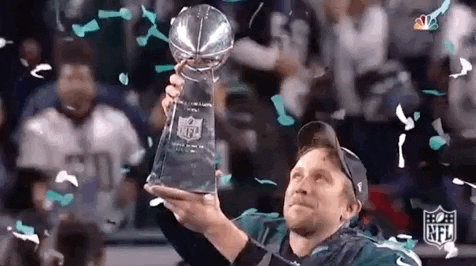

Football is a great sport that brings people together. Whether you're playing on a team or just watching a game, football has something for everyone. The excitement of the game, the camaraderie among players, and the thrill of victory make football a beloved pastime for millions around the world.
My Favorite team: Philadelphia Eagles
- Teams founding 
- Team through the years
- First Superbowl Win
- Second Superbowl Win
The Philadelphia Eagles were established in 1933 as a replacement for the bankrupt Frankford Yellow Jackets. The team was named after the eagle, a symbol of strength and freedom, which is also featured on the team's logo.
Over the years, the Eagles have had their ups and downs, but they have always been a competitive team in the NFL. As of recently the 2000's have been their best years. They have made a total of 5 Superbowl appearances, losing 3 of those (1981, 2005, 2023) and winning the other 2 appearances (2018, 2024)
The Eagles won their first Superbowl in the 2017-18 season against the New England Patriots. The season started strong and through the first 13 weeks of the season they posted a 10-2 record with quarterback Carson Wentz playing his best season at the time but unfortunately a week 14 matchup against the Los Angeles Rams would be his last of the season as he suffered a season ending torn ACL and LCL to his left knee. The gruesome injury left the team and fans in complete distress, the team was playing lights out football, Superbowl aspirations heading into the playoffs. The Eagles needed a miracle, backup quarterback Nick Foles took the helms and led the Eagles into the playoffs with many wondering, could he win it all? That's exactly what Nick did, he picked up right where Carson had left and never looked back. Nick would go on to help carry the Eagles through all the playoff rounds and eventually beat the reigning champions, New England Patriots in a thrilling 41-33 victory. The glory that evaded the Eagles for so many years was finally captured and the drought had finally ended.
The Eagles won their second Superbowl in the 2024-2025 season agaisnt the Kansa City Cheifs. In the offseason the Eagles had landed arguably the hottest free agent, running back Saquon Barkley. The team finished 14-3 through the regular season and Barkley would rush for over 2000 yards in the season. The Eagles had a red hot offense and the #1 defense in the league and it would show in the playoffs, first round of the playoffs they beat the Green Bay Packers 22-10, second round they would win a thrilling snow game against the Los Angeles Rams 28-22 and on the Conference Championship game they would demolish the Washington Commanders 55-23. Now with a rematch of 2022-2023 Superbowl against the Kansa City Chiefs set up the Eagles had only one thing in mind, dominate. And dominate is exactly what the Eagles did, by the end of the 4th quarter the score was 40-6 Eagles With less than 3 minutes left to play the Eagles pulled all starters and let backups get reps in and in doing so allowed the Chiefs to finally get some rhythm going and they would score 2 touchdowns in the finally 3 minutes of the game but it was too late. The Eagles had completely dismantled the Chiefs on offense and defense and had exposed this once mighty juggernaut of a team.The team was led by now Superbowl MVP Jalen Hurts in what was arguably his best season of his career so far.